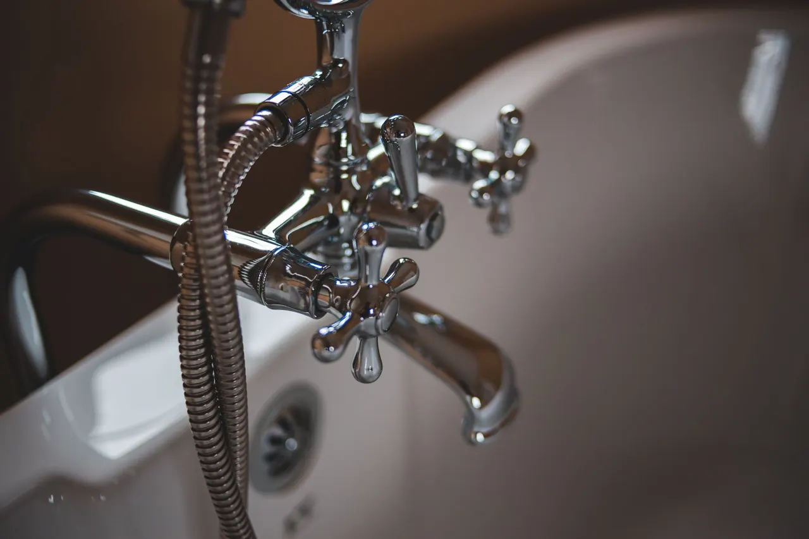
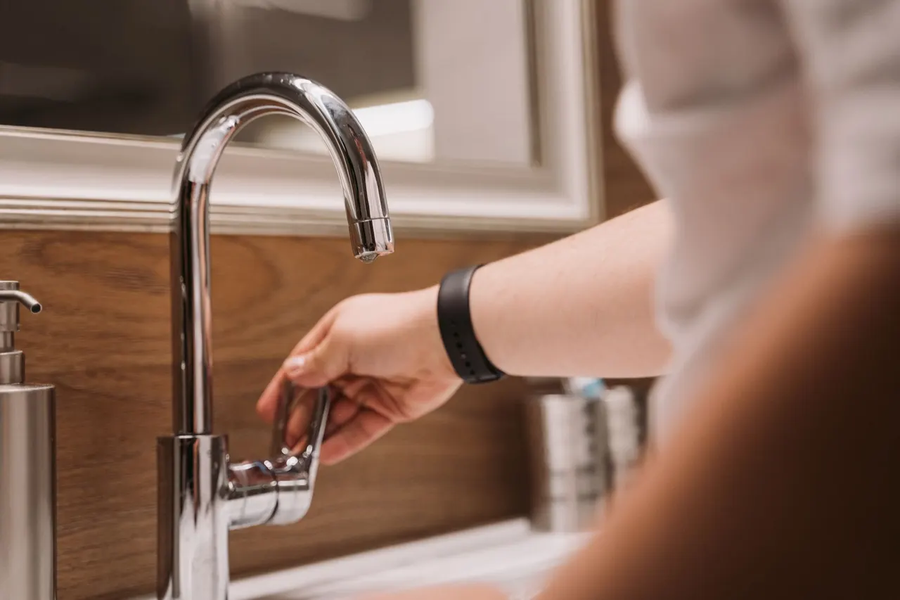

Written scope
What we fix, what parts, how long
When a pipe bursts behind a prep sink or a restroom backs up mid-service, you need commercial plumbing Plant City FL that answers the phone and shows up. We handle business plumbing services Plant City owners rely on, from restaurants on Collins Street to offices off James L. Redman Parkway. One call, and we get your water running right.

Every commercial plumbing call includes diagnosis, repair, and testing. Some work, like backflow certification and grease interceptor pumping, is scheduled separately. Here is what you can expect as part of a standard commercial plumbing visit in Plant City.


Some Plant City homes have commercial-grade water heaters, backflow assemblies, or home-based business plumbing that needs the same approach. We handle those with the same tools and testing we use on commercial buildings.
Plant City businesses need plumbing that works during operating hours and does not interrupt revenue. We schedule around your hours, protect your space, and test every repair before we leave.
Commercial plumbing Plant City FL covers everything that moves water, waste, or gas through a business: supply lines, drain stacks, grease interceptors, water heaters, backflow assemblies, restroom fixtures, and the shutoff valves nobody thinks about until 2 a.m. It is not residential work scaled up. Commercial systems run higher pressure, longer pipe runs, and heavier fixture counts, and they answer to the Uniform Plumbing Code and Florida Building Code in ways a house never does.
Plant City businesses sit in a climate that swings from humid 95-degree summers to occasional hard freezes in January, and that cycle punishes older copper pipe and cast iron drain lines. Add Hillsborough County's older commercial stock, and you get slab leaks under retail floors, root intrusion in sewer laterals, and water heater failures that always seem to land on a Friday. If you have been searching for business plumbing services near me Plant City, that search usually means something is already dripping, backing up, or running cold.
Commercial plumbing in Plant City works when the diagnosis is right and the repair is tested before we leave.
From the first phone call to the final pressure test, here is exactly what happens when you hire us for commercial plumbing in Plant City. Five steps, no mystery.

You call 813-548-5096 and describe what is happening. We ask the questions that matter: is water actively running, is the building occupied, where is the main shutoff. That tells us whether to send an emergency tech now or schedule a diagnostic visit, usually within the same day.

A technician arrives, walks the system, and pinpoints the failure. We use a pipe wrench and pressure gauge on supply lines, a drain snake or hydro jetting machine on clogged drains, and leak detection equipment on slab leaks. You get a plain-English explanation of what failed and why.

Before any repair starts, you get the scope and the price. We list what we are fixing, what materials we will use, and how long it takes. Most single-fixture repairs run two to four hours; larger drain or water heater jobs run a full day.

We do the work, then test it. Supply lines get pressure-tested, drains get flow-tested, water heaters get temperature-checked at the tap. If a joint weeps or a drain runs slow, we find it before we pack up, not after you call us back.

We walk the repair with you or your property manager, show you what was replaced, and note the shutoff locations and any parts we recommend watching. You get a record of the work for your files, which helps at inspection or when the next issue comes up.

Clears grease, scale, and root intrusion from commercial drain lines with high-pressure water. It removes the buildup instead of poking a hole through it, so the line stays open longer.

Handles smaller clogs in sink and floor drains. We use it when the blockage is close to the fixture and hydro jetting would be overkill.

Finds slab leaks and hidden line leaks without tearing up floors. We pinpoint the leak location before we open anything, which saves flooring and concrete.

Standard tools for supply line repair and replacement. We cut clean and thread or solder properly so joints hold under commercial pressure.

Used for copper pipe repairs and pressure testing. Every supply repair gets tested before we call the job done.

Our cameras, inspection tools, and power equipment come from RIDGID and Milwaukee. They hold up to daily commercial use and give us accurate readings.

Every repair and installation follows the Uniform Plumbing Code and Florida Building Code. That means correct pipe sizing, proper venting, and materials rated for the application. It matters at inspection and it matters for how long the repair lasts.

For any drain or sewer issue, we run a camera before we quote a repair. That tells us whether the problem is a simple clog, root intrusion, or a broken line, and it keeps you from paying for the wrong fix.
We dispatch an emergency tech with a drain snake and hydro jetting machine, clear the blockage, and camera the line to check for grease buildup or root intrusion. If the line needs repair, we schedule it for after close. The kitchen is back in service the same night, and you know whether the drain will back up again or if the fix is permanent.
We replace the fill valve and flapper with Moen or Kohler parts, check the other restroom fixtures while we are there, and test the shutoff valves. Most running toilet repairs take under an hour. The water waste stops, the restroom is quiet, and you avoid a ceiling leak from an overflow that was one clog away.
We test pressure at the main and at multiple fixtures, find a failing pressure regulator, and replace it. We also check the backflow assembly while the system is open. Pressure returns to normal across the building, and the ice machine and restrooms work the way they should.
We schedule all three tests in one visit, perform the testing with calibrated equipment, and file the paperwork with the county. If an assembly fails, we repair or replace it and retest. The property stays compliant, and the manager has documentation on file for the next inspection.
Plant City sits in Hillsborough County, and its commercial buildings reflect that: older downtown storefronts with original cast iron drain lines, mid-century retail and office buildings with copper supply systems, and newer warehouse and industrial construction with PEX and CPVC. Each era has its own failure patterns. The older downtown buildings deal with root intrusion in clay and cast iron sewer laterals, while newer construction sees slab leaks and pressure regulator failures. Summer heat and humidity stress water heaters and push HVAC condensate lines hard, and the occasional winter freeze cracks exposed backflow assemblies and outdoor supply lines. We schedule commercial plumbing maintenance Plant City Florida visits around those seasonal patterns, checking backflow assemblies before the first freeze and flushing water heaters before summer demand peaks. If you manage property in the 33563 or 33565 ZIP codes, we have probably worked in a building like yours.
A downtown Plant City restaurant had a kitchen floor drain backing up every three weeks. Grease buildup and root intrusion had narrowed the line to half its diameter, and the previous fix was a snake job that only poked a hole through the blockage.
We hydro jetted the line, camera-inspected it, and found a cracked section where roots had entered. We replaced that section, and the drain has run clear for over a year with no backups.
Quarterly grease interceptor service and an annual camera inspection keep the line clear. We schedule both around the restaurant's closed hours.
A two-story office building off James L. Redman Parkway lost hot water on a Friday morning. The 12-year-old Bradford White unit had a failed heating element and a corroded tank, and tenants were calling the property manager every hour.
We replaced the unit with a correctly sized commercial water heater the same day, tested temperature at every tap, and had hot water restored before end of business. The new unit runs at 140 degrees at the tank and 120 at the fixtures.
Annual flushing removes sediment and extends tank life. We check the anode rod every two years and replace it when it is more than half consumed.
A retail store in the 33566 ZIP code had a water bill that doubled over two months with no visible leak. The floor was dry, the fixtures worked, and the meter kept spinning with everything shut off.
We used leak detection equipment to pinpoint the leak under the sales floor, opened a small section, repaired the copper line, and pressure-tested it. The water bill dropped back to its normal range the next billing cycle.
We marked the repair location on the building's plumbing diagram and recommended an annual pressure check at the main to catch future leaks early.
These are the calls we get most from Plant City businesses. Each one has a real cause and a real fix, and none of them get better by waiting.

We run a camera down the line to find the blockage or break, then clear it with a drain snake or hydro jetting machine. If root intrusion or a collapsed section is the cause, we repair the line instead of clearing it again next month. Health code violations, closed restrooms, and water damage to flooring and drywall. A single backup can shut a restaurant down for a day or more.

We diagnose the failure, check whether it is a heating element, thermostat, or tank failure, and replace or repair the unit. We stock Rheem and Bradford White components and size replacements to your actual demand, not the old unit's label. No hot water means no handwashing for staff, which can close a food service operation immediately. In an office building, it means complaints from every tenant on the floor.

We use leak detection equipment to pinpoint the leak without tearing up the whole floor, then repair the copper or PEX line and pressure-test it. You see the water bill drop back to normal the next billing cycle. Water runs under the floor for weeks before anyone notices, damaging the slab, flooring, and foundation. The bill climbs every month until the leak is found.

We test pressure at multiple points to find whether the issue is a failing pressure regulator, a partially closed valve, or scale buildup in the lines. Then we fix the actual cause instead of replacing fixtures that were never the problem. Restrooms take longer, dishwashers and ice machines run slow, and tenants assume the building has a plumbing problem you are ignoring.
Most non-emergency calls in Plant City get a technician the same day, and true emergencies like a burst pipe or sewage backup get priority dispatch. We keep common parts on the truck, so a running toilet or failed shutoff valve does not turn into a two-visit job.
Every repair meets the Uniform Plumbing Code and Florida Building Code, and we pull permits when the scope requires it. That matters at inspection time, at insurance renewal, and when you sell the building. A cheap fix that fails inspection costs more than doing it right once.
We schedule around your business hours, not ours. Restaurants get work done before opening or after close, retail gets overnight scheduling, and offices get early-morning arrivals. You keep serving customers while we work the problem.
You get a clear price before we start, based on what we actually find, not a guess over the phone. No surprise line items, no hourly meter running while we look for parts. If the scope changes mid-job, we stop and tell you why.
Typical 2026 pricing for commercial plumbing Plant City FL work runs $180 to $450 for a single-fixture repair, $600 to $2,500 for water heater replacement or sewer line work, and $150 to $400 for drain cleaning depending on line length and blockage type. Emergency and after-hours calls carry a higher rate. You get the price before we start, based on what we find on-site, not a phone estimate that changes when we arrive.
What your estimate is based on
$180 - $2,500 depending on scope The price covers diagnosis, repair, testing, and cleanup. You are not paying for a return visit to fix something we missed, and you are not paying for parts that fail in six months. One visit, done right, costs less than three visits done cheap.
Clear records you can keep and share.
What we fix, what parts, how long
Pressure and flow readings after repair
Documentation for your files and inspections
Commercial plumbing runs at higher pressure and heavier use than residential systems, so repairs that work in a house can fail in a business. Knowing the difference helps you ask the right questions.
Commercial systems run higher pressure and longer pipe runs. A repair sized for a house may not hold up. We match materials and sizing to your actual system.
A repair that is not pressure-tested can fail days later. We test every supply repair before we leave. That is how you avoid a wet ceiling and a second call.
A drain that backs up repeatedly has a cause, not just a clog. Camera inspection finds the cause. Fixing the cause stops the recurring invoice.

Outside these areas? Call 813-548-5096 and ask if we can reach you. 8135485096
Most commercial plumbing repair in Plant City FL runs $180 to $450 for a single-fixture fix, and $600 to $2,500 for larger jobs like water heater replacement or sewer line work. Emergency calls after hours carry a higher rate. You get the price before we start, so there is no hourly guessing while we work.
Yes. We set up commercial plumbing maintenance Plant City Florida agreements that cover annual backflow testing, water heater flushing, drain line inspection, and fixture checks. Contracts get priority scheduling and a documented service history, which helps at inspection time and catches small failures before they shut down a restroom or a kitchen line.
Restaurant plumbing repair Plant City work is a large part of what we do. That includes grease interceptor service, three-compartment sink drain repairs, hand sink and prep sink supply lines, floor drain cleaning, and water heater replacement sized for a commercial kitchen. We schedule before opening or after close so you do not lose service hours.
We dispatch emergency calls immediately, and most Plant City addresses see a technician within 60 to 90 minutes. If you are off I-4 or out toward the 33565 and 33566 ZIP codes, add a few minutes for drive time. Call 813-548-5096 and we will give you a real arrival window, not a four-hour block.
One call gets a technician headed your way with the parts and tools to finish the job. We have been fixing Plant City plumbing since 2001, and we answer the phone when it rings. Call 813-548-5096 and tell us what is leaking, backing up, or running cold.